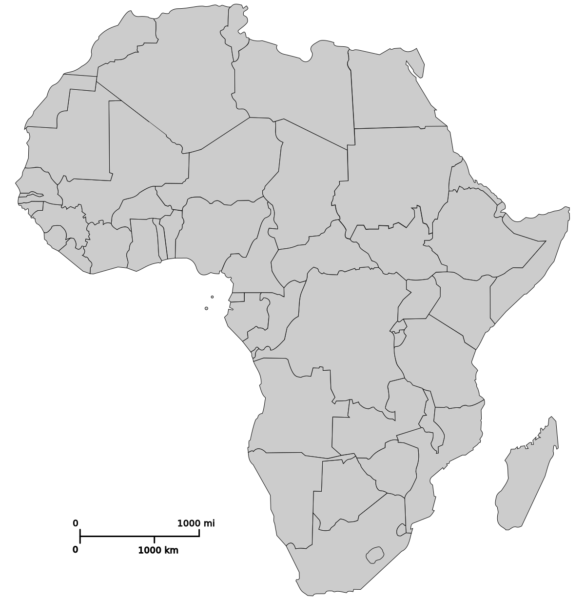

Nous recherchons des langues rares. Quelles langues parlez vous ?
Sélectionnez un ou plusieurs choix
Êtes-vous bien sûr de parler anglais ?
"In the kingdom of the blind, the one-eyed is king"
Cliquez sur la bonne traduction
Êtes-vous sûr de bien parler allemand ?
"Selbsterkenntnis ist der erste schritt zur besserung"
Cliquez sur la bonne traduction
Êtes-vous sûr de bien parler espagnol ?
Dime con quién andas, y te diré quién eres
Cliquez sur la bonne traduction
Êtes-vous sûr de bien parler italien ?
A lavar la testa all'asino ci si perde il ranno e il sapone
Cliquez sur la bonne traduction
Êtes-vous sûr de de bien parler mandarin ?
几家欢喜几家愁 (Jǐ jiā huān xǐ jǐ jiā chóu)
Cliquez sur la bonne traduction
Êtes-vous sûr de bien parler russe ?
Кому везет в картах, тому не везет в любви (Komu ne vezet v kartakh, tomu ne vezet v lubvi)
Cliquez sur la bonne traduction
Êtes-vous sûr de bien parler japonais ?
きのうのはなはきょうのゆめ (kinou no hana wa kyou no yume)
Cliquez sur la bonne traduction
Êtes-vous sûr de bien parler persan ?
Nâm e boland beh az bâm e boland
Cliquez sur la bonne traduction
Où est le Kenya ?
Cliquez sur le pays sur cette carte de l'Afrique

Quand a eu lieu la Guerre de Cent ans ?
Sélectionnez la bonne réponse
Regardez-bien cette photo
Que signifie le sigle AME ?
Sélectionnez la bonne réponse
Chez nous, on aime les sportifs. L'êtes-vous ?
Sélectionnez votre réponse
Combien de temps mettez-vous pour faire un semi-marathon ?
Sélectionnez votre réponse
Vous avez rendez-vous avec une source secrète dans un café. Vous arrivez le premier. Où vous installez-vous ?
Sélectionnez la bonne réponse
Votre conjoint est gravement malade. Il/elle menace de vous quitter si vous ne restez pas à son chevet. Votre chef vous envoie en mission, malgré vos réticences. Que faites-vous ?
Sélectionnez la bonne réponse
Vous devez suivre un homme à travers la ville, sans argent ni titre de transport. Que faites-vous ?
Sélectionnez la bonne réponse
Alors que vous aviez rendez-vous avec une source, vous vous apercevez que vous êtes suivi. Que faites-vous ?
Sélectionnez la bonne réponse
Vous êtes en mission en Algérie. La police débarque dans votre appartement et découvre de la drogue sous votre lit. Que répondez-vous ?
Sélectionnez la bonne réponse